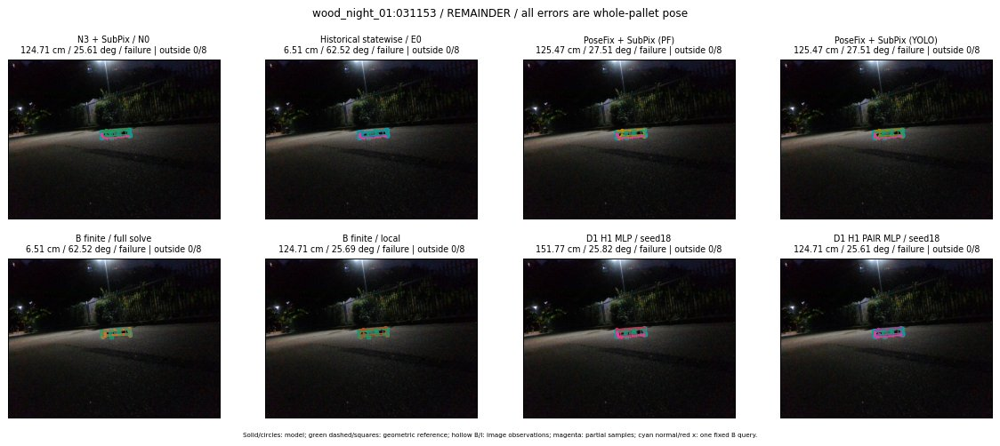
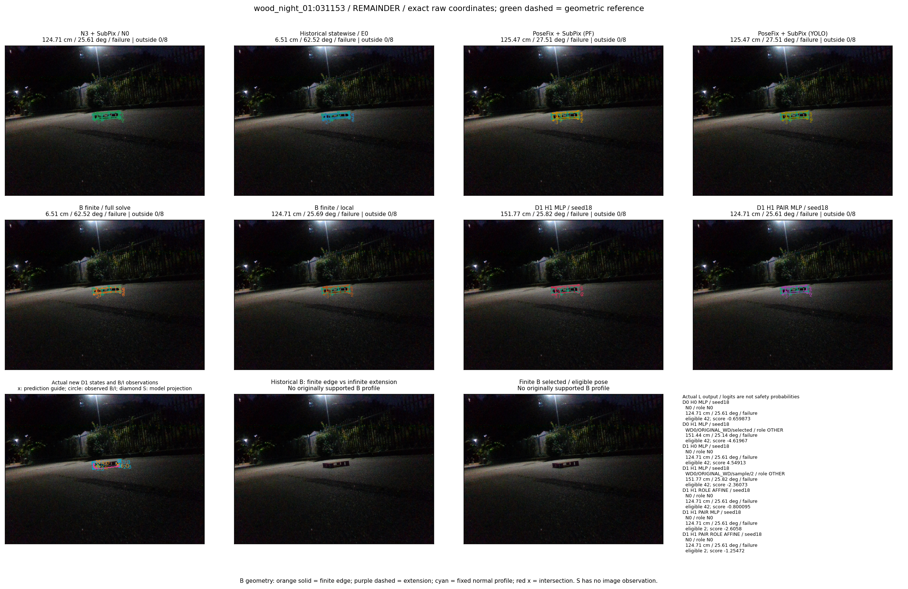

Whole-pallet pose errors; reference is a fixed geometric annotation, not certified physical GT.


Scores are uncalibrated logits. N0 retention is a numerical pose alias; it differs from H0 none or B fallback. B/I and profiles in baseline/B panels are original observations; L panels use new D1 observations. Only one deterministic supported B query is shown in a thumbnail; full support counts are below. Grey privacy rectangles edit the display copy only and are unrelated to O states; all observations were measured on original pixels. Thumbnails use JPEG quality85; detailed scientific panels are PNG.
| Method | Whole pose / cm, deg | Actual source | Selected ID | Score | Archived candidates | Eligible | N0 retained | H0 none | Fallback | Finite profiles |
|---|---|---|---|---|---|---|---|---|---|---|
| Raw YOLO + F | 45.43 cm / 60.73 deg / failure | OTHER | None | N/A | N/A | N/A | False | N/A | None | N/A |
| N3 + SubPix / N0 | 124.71 cm / 25.61 deg / failure | N0 | None | N/A | N/A | N/A | True | N/A | None | N/A |
| Historical statewise / E0 | 6.51 cm / 62.52 deg / failure | E0_REGENERATED | None | N/A | N/A | N/A | False | N/A | False | N/A |
| PoseFix raw | 114.79 cm / 27.43 deg / failure | OTHER | None | N/A | N/A | N/A | False | N/A | None | N/A |
| PoseFix + SubPix (PF) | 125.47 cm / 27.51 deg / failure | OTHER | None | N/A | N/A | N/A | False | N/A | False | historical support records 9; finite audit N/A |
| PoseFix + SubPix (YOLO) | 125.47 cm / 27.51 deg / failure | OTHER | None | N/A | N/A | N/A | False | N/A | False | historical support records 9; finite audit N/A |
| Historical L, seed18 | 124.71 cm / 25.61 deg / failure | N0 | N0 | N/A | 61 | 57 | True | True | True | N/A |
| Historical B fixed bank | 6.51 cm / 62.52 deg / failure | OTHER | LOGGED/G13/SWAPPED_WD/outline_consider/57 | N/A | N/A | N/A | False | N/A | False | N/A |
| Historical B full | 6.51 cm / 62.52 deg / failure | OTHER | LOGGED/G13/SWAPPED_WD/outline_consider/57 | N/A | N/A | N/A | False | N/A | False | N/A |
| Historical edge full | 6.51 cm / 62.52 deg / failure | OTHER | LOGGED/G13/SWAPPED_WD/outline_consider/57 | N/A | N/A | N/A | False | N/A | False | N/A |
| Historical AB full | 6.51 cm / 62.52 deg / failure | OTHER | NEW/AB/SWAPPED_WD/h0/LOGGED/G13/SWAPPED_WD/outline_consider/57/PROPOSED_NATIVE_YAW_0 | N/A | N/A | N/A | False | N/A | False | N/A |
| B finite / fixed bank | 6.51 cm / 62.52 deg / failure | OTHER | LOGGED/G13/SWAPPED_WD/outline_consider/57 | N/A | N/A | N/A | False | N/A | False | 0/0 |
| B finite / full solve | 6.51 cm / 62.52 deg / failure | OTHER | LOGGED/G13/SWAPPED_WD/outline_consider/57 | N/A | N/A | N/A | False | N/A | False | 0/0 |
| B finite / local | 124.71 cm / 25.69 deg / failure | OTHER | NEW_FINITE/B/ORIGINAL_WD/h0/N0_LOCAL_SAME_PHYSICAL_POSE/ORIGINAL_WD | N/A | N/A | N/A | False | N/A | False | 0/0 |
| Edge finite / full solve | 6.51 cm / 62.52 deg / failure | OTHER | LOGGED/G13/SWAPPED_WD/outline_consider/57 | N/A | N/A | N/A | False | N/A | False | 0/0 |
| D0 H0 MLP / seed18 | 124.71 cm / 25.61 deg / failure | N0 | N0 | -0.6598728895187378 | 46 | 42 | True | True | True | N/A |
| D0 H0 MLP / seed19 | 124.71 cm / 25.61 deg / failure | N0 | N0 | -0.2469726800918579 | 46 | 42 | True | True | True | N/A |
| D0 H0 MLP / seed20 | 124.71 cm / 25.61 deg / failure | N0 | N0 | -2.5720252990722656 | 46 | 42 | True | True | True | N/A |
| D0 H1 MLP / seed18 | 151.44 cm / 25.14 deg / failure | OTHER | WD0/ORIGINAL_WD/selected | -4.619669437408447 | 46 | 42 | False | False | False | N/A |
| D0 H1 MLP / seed19 | 151.77 cm / 25.82 deg / failure | OTHER | WD0/ORIGINAL_WD/sample/2 | -4.383332252502441 | 46 | 42 | False | False | False | N/A |
| D0 H1 MLP / seed20 | 151.44 cm / 25.14 deg / failure | OTHER | WD0/ORIGINAL_WD/selected | -4.9420013427734375 | 46 | 42 | False | False | False | N/A |
| D1 H0 MLP / seed18 | 124.71 cm / 25.61 deg / failure | N0 | N0 | 4.549130439758301 | 46 | 42 | True | True | True | N/A |
| D1 H0 MLP / seed19 | 124.71 cm / 25.61 deg / failure | N0 | N0 | 4.48460578918457 | 46 | 42 | True | True | True | N/A |
| D1 H0 MLP / seed20 | 124.71 cm / 25.61 deg / failure | N0 | N0 | 4.402305603027344 | 46 | 42 | True | True | True | N/A |
| D1 H1 MLP / seed18 | 151.77 cm / 25.82 deg / failure | OTHER | WD0/ORIGINAL_WD/sample/2 | -2.360729932785034 | 46 | 42 | False | False | False | N/A |
| D1 H1 MLP / seed19 | 151.77 cm / 25.82 deg / failure | OTHER | WD0/ORIGINAL_WD/sample/2 | -2.511521577835083 | 46 | 42 | False | False | False | N/A |
| D1 H1 MLP / seed20 | 151.77 cm / 25.82 deg / failure | OTHER | WD0/ORIGINAL_WD/sample/2 | -2.8268966674804688 | 46 | 42 | False | False | False | N/A |
| D1 H1 ROLE AFFINE / seed18 | 124.71 cm / 25.61 deg / failure | N0 | N0 | -0.8000952005386353 | 46 | 42 | True | False | False | N/A |
| D1 H1 ROLE AFFINE / seed19 | 124.71 cm / 25.61 deg / failure | N0 | N0 | -0.4191654622554779 | 46 | 42 | True | False | False | N/A |
| D1 H1 ROLE AFFINE / seed20 | 124.71 cm / 25.61 deg / failure | N0 | N0 | -0.8818094730377197 | 46 | 42 | True | False | False | N/A |
| D1 H1 PAIR MLP / seed18 | 124.71 cm / 25.61 deg / failure | N0 | N0 | -2.605797529220581 | 46 | 2 | True | False | False | N/A |
| D1 H1 PAIR MLP / seed19 | 124.71 cm / 25.61 deg / failure | N0 | N0 | -2.679906129837036 | 46 | 2 | True | False | False | N/A |
| D1 H1 PAIR MLP / seed20 | 124.71 cm / 25.61 deg / failure | N0 | N0 | -3.6945199966430664 | 46 | 2 | True | False | False | N/A |
| D1 H1 PAIR ROLE AFFINE / seed18 | 124.71 cm / 25.61 deg / failure | N0 | N0 | -1.2547167539596558 | 46 | 2 | True | False | False | N/A |
| D1 H1 PAIR ROLE AFFINE / seed19 | 124.71 cm / 25.61 deg / failure | N0 | N0 | -1.7398953437805176 | 46 | 2 | True | False | False | N/A |
| D1 H1 PAIR ROLE AFFINE / seed20 | 124.71 cm / 25.61 deg / failure | N0 | N0 | -1.503490686416626 | 46 | 2 | True | False | False | N/A |
| Regenerated common E0 | 6.51 cm / 62.52 deg / failure | E0_REGENERATED | E0_REGENERATED | N/A | N/A | N/A | False | N/A | False | N/A |